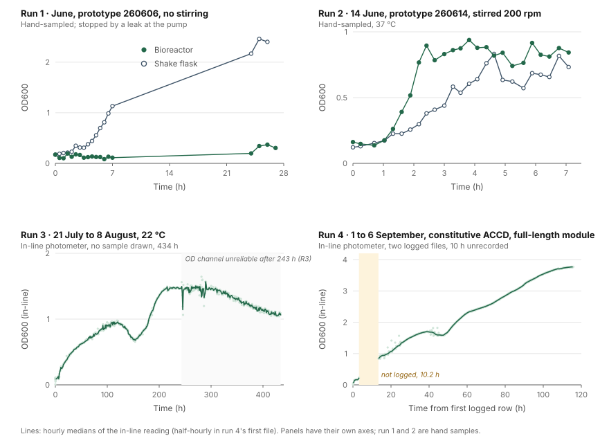

Introduction
What is a digital twin?
A digital model represents a physical system but is updated by hand. A digital shadow receives live data automatically, but changes back to the system still need a person. A digital twin closes the loop: data flows automatically from the system to the model and back. The line between the three is not always clear; what separates them is whether information moves on its own.
Our bioreactor will run for weeks beside farmland, far from a lab. Nobody will be there to take samples or read every value, so the digital twin makes the decisions.
Without manual sampling, the reactor's own instruments are the only record of the batch, and they drift as they wear. On the 434-hour run the OD channel failed, and the twin's trust layer flagged the reference beam 26.7 hours before the OD readings became unusable.
The twin also decides when to switch on green light to start protectant production, which protectant, and how much. Regional data (the weather forecast, crop-stress risk and the Geospatial Analysis maps) show when and where crops will come under stress. Local data from BR-01 show how much biomass is in the loop, whether it is growing, whether the membrane still passes permeate, and whether those readings can be trusted (R3). Induction makes sense when the field is heading into stress and the culture can respond. The forecast (R4) and growth prior (R5) say whether the batch will be ready in time. Once the ACC deaminase assay puts a number on the product, the same framework can estimate how long to induce to reach a target amount.
What the reactor measures now
Every value is tagged by how it was obtained:
- in-line A sensor on the loop of culture pumped around the bioreactor.
- commanded Set by the operator (the farmer).
- soft Calculated from in-line readings.
- planned Not yet collected.
- external Data pulled in from outside the rig.
Within the bioreactor
| Channel | Instrument | Purpose | Provenance |
|---|---|---|---|
| OD600 | Photometer: amber LED, 2 mm flow cuvette, sample and reference lux sensors | Biomass | in-line |
| pH | Arduino pH probe | Growth and secretion conditions; alarm | in-line |
| Pressure × 3 | Transducers on lumen in, lumen out and shell | Lumen ΔP, trans-membrane pressure, fouling | in-line |
| Loop flow | Turbine flow meter | Cross-flow, wall shear, hydraulic model (R1) | in-line |
| Pinch valve | One STS3215 serial servo | Lumen isolation | commanded |
| Luer valves × 4 | Turned by hand; no actuator yet | Routing between reservoir, module and permeate | planned |
| Lumen ΔP, TMP, fouling ratio | Pressure and flow through the hydraulic model | Membrane state; when to clean | soft |
| Green light | Characterised on the DiOPAL plate apparatus | Induces the CcaS/CcaR strain to make protectant | planned |
| Loop temperature | DS18B20 probe, or a value typed by the operator; the record says which | pH compensation, viscosity, growth | in-line |
| Dissolved oxygen, permeate mass | None fitted | See Must have, yet to have | planned |
This is the rig as designed. The firmware reads three of the four pressure transducers on the parts list, one pinch valve, and no Luer valve or light. The software that runs the reactor lists what is wired.
Outside the reactor
Today's rig software reads none of these. They belong to the next interface.
| Channel | Instrument or source | Purpose | Provenance |
|---|---|---|---|
| Leaf wetness and leaf temperature | RS485 dummy-leaf sensor read over Modbus by an ESP32 | Biotic stress detection | planned |
| Air temperature and humidity | SHT31 beside the leaf sensor | 5-day mean temperature for the blast rule; checks the forecast | planned |
| Geospatial analysis | Geospatial Analysis maps | Where crops are likely to come under stress | external |
| Weather forecast | Open-Meteo, hourly, five days back and three ahead | Temperature, humidity, rain, wind, evapotranspiration | external |
| Crop stress risk | Computed from the forecast | When protectant is needed | soft |
| Time | Crop calendar | Tracks the farming cycle | planned |
Leaf wetness does not stress rice; it matters because blast fungus needs a wet leaf to infect. The interface applies the BLASTAM rule for leaf blast [7]: a wet period counts when the leaf stays wet 10 h at 22–25 °C, 11 h at 20–21 °C, up to 17 h at 15 °C [8], never below 15 or above 25 °C, and the previous five days average 20–25 °C. Past hours come from the sensor, future hours from forecast humidity above 90% [9]. The sensor is still on a bench, the rule is unscored on Taiwanese fields, and ACC deaminase is untested against blast, so blast risk is shown to the grower and triggers nothing.
Strains on this page
Every reactor run before October used B. subtilis 168; run 4 is 168 with the constitutive ACC deaminase secretion construct. The production strain is WB800, with constitutive ACCD secretion or ACCD under CcaS/CcaR green-light control. R5 and the registered forecast use WB800.
Results
- 26.7 hWarning before the OD channel failed (R3)
- 41%Forecast error cut against persistence, 2 h ahead (R4)
- ≤ 7%Plate-to-reactor prior error on held-out arms (R5)
- 1.9%NRMSE of the growth fit, against a 15% criterion (R5)
Every run so far
BR-01 has grown B. subtilis five times. Runs 1 and 2 were June prototypes sampled by hand against a shake flask; from July the in-line photometer took over. Figure 1 shows the four finished runs.
| Run | Set-up | OD600 | What it gave |
|---|---|---|---|
| 1 · 6 June prototype 260606 | 168. PES hollow fibre, lumen about 200 mL; 300 mL LB plus 20 mL overnight culture; peristaltic pump at 94 mL/min; no stirring | Hand samples to 27 h: reactor 0.17 to 0.37, flask to 2.46 | Stopped by a pump leak. 2 mL of shell-side liquid grew no colonies. Next: BPT tubing, stirring, sampling at the reservoir |
| 2 · 14 June prototype 260614 | 168. Run 1 plus stirring at 200 rpm and a sampler before the pump; 37 °C | Samples every 15–20 min to 7.1 h: reactor 0.90 by 145 min, flask 0.83 by 278 min | Stirred reactor plateaued about two hours before the flask. Next: 22 °C |
| 3 · 21 July to 8 August | 168 at 22 °C, in-line photometer | 434 h continuous, peak about 1.5 | The trust layer (R3); the 22 °C plateau in Limits |
| 4 · 1 to 6 September | 168 with constitutive ACC deaminase secretion, in the incubator, full-length hollow fibre module | Two files: 3.2 h from near zero to 0.24; 10.2 h unlogged; then 102 h from 0.84 to 3.77 | The forecast comparison (R4), on the second file |
| 5 · 8 to 9 October | WB800 secreting codon-optimised ACC deaminase (v2t1), constitutive promoter; rig app v4.13 | Running; ends about 19:00 on 9 October | Scores the registered forecast and the first activity assay |
The June pair is why the reactor has a stirrer: unstirred, the reactor barely grew while the flask grew fourteen-fold; stirred, the reactor overtook the flask. Run 1 also gave the first containment check, with no colonies from the shell side of the membrane.

260610 test1 no stir.xlsx, 260614, test 2 stir.xlsx, 0721, test3 20 day.csv, 20260902 and 20260906 test4 photometer.csv.R1 · Module pressure drop calibrated
16 August 2026: water at 22 °C, eight pump settings, once with the module fitted and once with a jumper in its place. Both fit \(\Delta P = aQ + bQ^2\) through the origin (module R² 0.9954, residual SD 10.1 mbar; jumper R² 0.9950, SD 5.7 mbar). At 263 mL/min the net module drop is 0.096 bar, 1.03 times the Hagen–Poiseuille prediction for 11 open fibres, which justifies using the model as a soft sensor for flow. No point was held out.
263 mL/min has been the operating point since: wall shear 4064 s⁻¹, mid-way in the module's 2000–6000 band; Re 531, laminar; about 11 effective fibres of a nominal 11, so none are blocked. Axial non-uniformity is 28% against a 20% target, but lowering the flow would also lower shear.
Wall shear can be computed from the pressure drop or from the flow rate, and the two agree to 2.8%. Against that margin, the 20% disagreement in October is a fault.
To reconcile before the freeze
The 25 August progress report gives 0.084 bar and 0.90–0.96× theory for the same measurement. Both come from one spreadsheet; the figures here are the later analysis.

260816 pressure to flow rate.xlsx.R2 · Photometer and BioDrop calibration against TiO₂ doses calibrated
On 23 August 2026, cumulative TiO₂ additions gave 45 paired points between the in-line photometer and the BioDrop spectrophotometer (Figure 3). Scoring both against the known dose, not against each other, showed that both degrade above 30 mg in different ways. The BioDrop keeps its slope but scatters (R² 0.85, SD 0.12). The photometer stays precise (R² 0.99, SD 0.022) but its response per milligram falls.
A Gaussian process was fitted as a check. Inside its range the linear fit wins (RMSE 0.0235 against 0.0254) and is kept. Past OD 1.2, linear error rises to 0.1715 while the GP holds 0.067, and the GP found its own limit at OD 1.55. Its 95% band covered only 88.9% of held-out points, so its intervals are too narrow. Up to OD 1.2 the photometer regresses on the BioDrop with slope 1.018, R² 0.995, residual SD 0.024 OD. TiO₂ shows linearity, not cell number.

Inline photometer to biodrop.xlsx.R3 · B. subtilis 168 growth log with the photometer scored on unseen data
21 July to 8 August 2026: 434 hours of B. subtilis 168 at 22 °C, 2,671 valid rows, no sample drawn. Two axes are scored separately: a sensor axis on the reference beam, which never passes through the culture, and a process axis on the specific growth rate.
Each axis is scored every 10 minutes. A check is an alarm when its score exceeds the 99.5th percentile of the healthy first 120 hours; the table gives the share of alarms in each window.
| Window | What happened | Sensor axis | Process axis | Interpretation |
|---|---|---|---|---|
| 120–160 h | OD falls 0.93 to 0.72; reference normal | 0% | 73% | Process event |
| 220–240 h | Reference steps 26.67 to 25.83 lux; OD still clean | 100% | 0% | Photometer drifting while OD still looks fine |
| 240–434 h | Reference collapses; OD scatter 5 to 10× higher | 100% | 35–36% | Photometer and OD both unreliable |
The 120–160 h drop is real: 0.21 OD against a local residual SD of 0.022, with the optical channel normal. Contamination found no support; the culture still smelled of B. subtilis and four-quadrant streaks gave 168 morphology. Autolysis with cryptic growth, sporulation and regermination, and biofilm sloughing remain, and one run cannot separate them. The repeat is WB800 with constitutive ACCD under antibiotic selection.
The trust layer flagged the sensor at 216.3 h, 26.7 h before the OD channel failed completely at 243.0 h: enough time for a controller to drop the faulty feed. A standard step detector (any jump above 0.05 OD) flagged 23% of sensor anomalies and 0.8% of biological shifts, and could not tell them apart.
The forecast (R4), the prior (R5) and induction all work from the OD reading, and a drifting sensor can produce numbers that look like normal growth. R3 sits upstream: the sensor axis says whether the instrument can be trusted, the process axis whether the culture changed. On the 434-hour run this gave 26.7 hours to mark OD unreliable and pause forecasts while the readings still looked normal. It has been shown on one run with one event of each kind; a detection rate needs deliberate faults on unseen batches.

out/sentinel.json.R4 · Batch forecasting rules fixed in advance
We ran 102 hours of perfusion, 2 to 6 September 2026, with B. subtilis 168 secreting ACC deaminase constitutively; OD600 rose from 0.83 to 3.77. This is the second of run 4’s two files (Every run so far): the culture started on 1 September, was logged for 3.2 h to OD 0.24, then went unrecorded for 10.2 h, so most of the exponential phase is in the gap. We compared Kalman filter, local linear, global linear and exponential forecasts against persistence, which predicts no change. A forecast was made every hour from 12 h, each using only data up to that point.
| Horizon | Persistence RMSE | Kalman RMSE | Improvement |
|---|---|---|---|
| 2 h | 0.067 | 0.040 | 41% |
| 4 h | 0.132 | 0.083 | 38% |
| 8 h | 0.256 | 0.192 | 25% |
| 12 h | 0.373 | 0.310 | 17% |
A two-state Kalman filter (level and slope) beats persistence at every horizon, by less as the horizon grows. Global linear and exponential fits did worse than persistence at short horizons.
Global linear weighs early data as much as recent data, so it points the wrong way when growth changes speed. Exponential assumes growth keeps accelerating, which it does not over 102 hours of perfusion, so it overshoots. Local linear follows the recent level and slope; the Kalman filter also weighs each reading against the noise, so it follows real changes without chasing scatter.
It updates with each reading without refitting and tracks its own uncertainty, shown as a band on the Growth twin tab. It sits downstream of R3 because it is only as good as its input.

walkforward_0902_results.csv.R5 · Carrying a growth prior from plate to reactor held-out arms
On 19 September 2026, B. subtilis WB800 grew in light-programmable array wells under six light arms, read on a plate reader at five time points to 24 h. A logistic model beat logistic-with-lag by AICc and fits at NRMSE 1.9% (R² 0.997), against the 15% criterion for bioprocess models [3]: \(r = 0.299 \pm 0.017\;\mathrm{h^{-1}}\) (doubling time 139 min), \(K = 1.005\), \(X_0 = 0.0235\).
Green induction costs no growth: r spans 0.279 to 0.317 h⁻¹ across the six arms, within one standard error, and the highest-green arm reaches the highest plateau. To test the fit as a prior, we left out each arm in turn, fitted the other five, and predicted its 24 h OD from its first 8 hours, with and without the prior.
| Arm | Observed OD at 24 h | With the prior | Without the prior |
|---|---|---|---|
| R1 weak red | 0.967 | 0.972 | 0.306 |
| R2 medium red | 0.910 | 0.973 | 0.296 |
| R3 high red | 0.967 | 0.969 | 0.355 |
| G1 weak green | 0.958 | 0.986 | 0.502 |
| G2 medium green | 0.975 | 0.977 | 0.695 |
| G3 high green | 1.014 | 0.958 | 0.666 |
With the prior the error was at most 7%; without it, 29 to 68%, from the same eight hours. The plate works as a scale-down model of the reactor, as in biomanufacturing process transfer [3].
The six arms are biologically near-identical, so this tests reproducibility, not prediction under a new condition, and with no sample between 8 and 24 h, K rests on one time point.
A reactor run takes days; a plate run takes 24 hours and tests six conditions. With a plate prior the twin can forecast from the first few hours, when R4's Kalman filter has least to work with. Only r carries over for now: K and X0 need the plate-reader and in-line OD scales cross-calibrated, so the registered forecast predicts r alone.

lpa_growth_fit_20260919.json.
Registered forecast
To test the twin's forecast, we registered it before a reactor run of B. subtilis WB800 with constitutive ACC deaminase secretion. The strain carries a codon-optimised ACC deaminase, and the run is the 8 October batch. The forecast file is prereg_forecast_20261002.json, SHA-256 bceda7c0…6e0388fc, and cannot be edited after the run. The run ends about 19:00 on 9 October; the score goes here whichever way it falls.
| Registered prediction | Value | Criterion for passing |
|---|---|---|
| Specific growth rate r | 0.2986 h⁻¹, 90% interval 0.2705 to 0.3300 (doubling time 139 min, 126 to 154) | The fitted r falls inside the interval |
| Growth curve shape | Logistic, prior-predicted trace | NRMSE below 15% [3] |
| Time to reach OD 0.5 | Depends on measured inoculum: 7.3 h from OD 0.10, 9.8 h from 0.05, 13.0 h from 0.02 | Observed time inside the 5–95% band |
\(K\) and \(X_0\) were fitted on the plate-reader scale in a 150 µL well; the reactor reads a 2 mm flow cuvette, with no cross-calibration yet, so they are left out of the primary endpoint. The LPA run's temperature was not recorded, and the team's 37 °C shake-flask fit is about four times faster, so the primary criterion does not apply to a reactor batch run at 37 °C.
If the rate fails and the shape passes, temperature is the first suspect. If both fail, the prior does not transfer from plate to reactor, and we will report that.
The same batch carries the first ACC deaminase activity assay, with its bar set in advance: at least 1 mU/mL in cell-free permeate (60 nmol α-ketobutyrate per mL per hour), n = 3, and at least three times both an empty-vector permeate and a minus-ACC blank. Measuring the permeate tests expression and delivery across the membrane in one number. ELISA follows on the CcaS/CcaR version once the western blot band is strong enough.
Must have, yet to have
| Missing | What it unlocks | Status |
|---|---|---|
| Loop temperature, actually reading | Explains the largest unknown in growth and normalises flux between runs. The probe is fitted and read by the firmware but was not answering on 8 October, so that batch carries a typed 37 °C. | must have wiring, not code |
| Permeate flow or mass | Productivity in mg per day, a closed mass balance, and a fouling signal independent of pressure. A load cell under the permeate vessel is enough. | must have |
| Dissolved oxygen | Separates oxygen limitation from stationary phase and settles \(k_La\) (45.7 against 60 h⁻¹). Both probes read in August, but neither can be autoclaved and the bottle has a rubber septum, so the problem is inserting them aseptically. | must have an insertion method, not a sensor |
| In-line versus plate OD cross-calibration | Lets \(K\) and \(X_0\) transfer from the plate prior, not just \(r\). Half a day of dilution series. | must have |
| Two more reactor growth runs | Retires the n = 1 on the prior. | must have |
| A fouling run to the cleaning threshold | Fits the fouling law and re-measures the clean-module baseline. It drives the product's only maintenance decision. | one run |
| Green light on the reactor | Makes induction a controlled variable and closes the loop. Test: 14 days or more, green on and red off, the switch plotted against protein output; 14 because at 22 °C the culture takes over 200 hours to plateau (R3). | next build |
| The leaf sensor, calibrated and then scored | A dry-down test sets the wet threshold and a humidity box checks whether damp air reads as wet. Then a paddy trial with lesion counts scores BLASTAM on Taiwanese fields. | bench, then field |
The software that runs the reactor
Every number on this page was recorded by one program: the Arduino App Lab application our instructor Chars wrote for the Uno Q board on BR-01. It runs the instruments, the safety interlocks and the data logger. The version here is recording the current batch: firmware v3.10.9, backend v4.12, interface v4.13, the thirteenth release in five weeks.
The interface
One file, no install, served by the board on port 7000 in English or Traditional Chinese, with an explanation and normal range behind every information mark.
What survives which failure
All interlocks run in the Uno Q's microcontroller firmware, so no fault in a model, backend or browser can push the loop past a limit. Lumen-in or trans-membrane pressure above 0.5 bar for two consecutive 200 ms windows opens the pinch valve and latches a fault, as do fifteen minutes closed, a servo at 60 °C, or a servo that stops answering. A latched fault stays until an operator clears it.
Each sampling window is written and fsynced to the board's disk as it closes, so a jammed command channel loses control but not data, and closing the browser loses neither. After a restart the app appends to the same file and records the gap in a gap_s column. Missing readings are left blank, never zero, and each row carries the algorithm, configuration and constants that produced it, so a September run can be pooled with an October one.
How each reading is made
Each reading is a measurement procedure in firmware:
| Instrument | How the reading is made |
|---|---|
| OD600 | An amber LED and two lux sensors, one through the 2 mm flow cuvette and one on the lamp. Four dark readings, LED on for 60 ms, sixteen more; bubbles rejected by median absolute deviation, and the burst retried if over half is rejected. \(\mathrm{OD}_{600}=\log_{10}(R_{\text{blank}}/R)\times f\) on the sample-to-reference ratio. The reference sensor never sees the culture, which makes the trust layer possible. |
| Pressure | Three transducers, 14-bit, sixteen-fold oversampled at 100 Hz; peak, trough, mean and pulsation frequency of a one-second window every 200 ms. The trough matters: a peristaltic pump makes pressure a waveform, and the membrane can be driven backwards at a trough while the mean looks safe. |
| Loop flow | A turbine meter on an interrupt pin, 2580 pulses per litre; pulses closer than 500 µs are treated as bounce. |
| pH and temperature | pH every 500 ms, 256-fold oversampled on a temperature-compensated Nernst slope; a jump is accepted after three repeats; values outside pH 2–12 are left blank. Temperature comes from the loop probe when it answers and a typed value when it does not, and the record says which. |
What it computes
From three pressures and one flow the app reports the state of the module: TMP_out as \(P_{\text{out}}-P_s\), the lumen drop minus the water column, and wall shear computed twice, from pressure as \(\tau_w/\mu\) and from flow as \(8v/d\). Their ratio is the clogging indicator. The module is 11 fibres of 1 mm bore and 0.6 m length, 0.02 m² of 0.2 µm membrane, with 1 L of culture at 22 °C; thresholds come from R1.
Fouling is tracked as \(R=\Delta P_{\text{net}}/Q\), with cleaning at twice baseline. Flux is converted to 25 °C before runs are compared, since a 3 °C room drift otherwise reads as fouling; the typed 37 °C in the current batch therefore matters. Ratios are suppressed below 10 mL/min, where the flow meter is too coarse, and marked provisional because the clean-module baseline has not been re-fitted on this plumbing.
The 8 October batch

This is the run the registered forecast was written against. In-line: OD600 0.1758 AU, up from near zero over 89 minutes; pH 6.500, drifting down; three pressures; loop flow 386.9 mL/min at PWM 145. Derived against the provisional baseline: wall shear 4996 s⁻¹, ΔP ratio 0.83, γ ratio 1.01. The amber banner (calibration restored from file) stays until someone recalibrates; the red strip says TMP_out is negative, so permeate is pushing back on the membrane.
- Flux and permeability are typed in. Nothing weighs the permeate, so the 72 LMH shown is a hand-entered 24.00 mL/min over the membrane area (36 times the design flux), and the 92% permeability trend follows that number.
- Temperature was typed at 37 °C while the constants assume 22. Viscosity enters wall shear directly, so the shear figures and any flux comparison between runs carry the typed value.
The twin also disagrees with itself. With \(b=0\) the ΔP ratio and γ ratio are the same quantity up to a constant of 1.009, yet they read 0.83 and 1.01. The cause is flow: the ΔP baseline of 10.08 kPa implies 385 mL/min, while \(\gamma_{\text{flow}}=4939\,\mathrm{s^{-1}}\) implies 320, a ratio of 1.205 against the 1.206 needed. The two halves of the clogging indicator use different flow windows. They agreed to 2.8% in August (R1), so 20% is a flag. The cleaning decision uses the γ ratio, so the recording will be checked for which window each used.
The next interface
The rig app knows the reactor but not the field: it has no forecast, no leaf sensor and no way to judge crop stress, which is what the twin is for. The rewrite keeps the split between a browser that displays and firmware that protects, and adds the regional forecast and the leaf sensor. It has six tabs: what to do now, the rig as a live P&ID, the growth twin against its forecast band, weather and blast risk, the batch record with provenance in every export header, and setup.
One idea needs no new hardware: a chromoprotein downstream of the protectant, so the photometer reports product as well as biomass. Whether two signals separate in one cuvette, and how far from 600 nm the second peak must sit, is open.
The rig app's interlocks, board-side recording, bubble rejection and calibration bookkeeping each exist because a run failed without them. Until the rewrite carries these over, the rig app records and the rewrite is tested on its recordings. Nothing on this page was measured by the rewrite.
Current limits
- The loop is not closed. Valves move under software control, but every decision about the culture, above all induction, still goes through a person. That makes it a digital shadow with actuation [1, 2].
- n = 1 almost everywhere. Four runs of 168, two logged in-line, differing in temperature, module and strain: one run behind R3, part of one behind R4, one plate behind R5.
- 37 °C fits, 22 °C operation. At 22 °C growth is 28 times slower but plateaus at OD 1.454, within noise of the 37 °C plateau reached in five hours. The cost is time, not yield, but rate parameters do not transfer.
- Beer–Lambert at scale. The photometer is linear only to about OD 1.2 in a 2 mm cell, and a dense culture will attenuate induction light in a way nothing on the rig measures.
- Trans-membrane pressure is below transducer resolution at the operating point, so lumen ΔP is used instead.
- The 120 to 160 h event is unexplained. The trust layer called it biological, contamination is ruled out as far as one run allows (R3), and three hypotheses remain.
- The clean-module baseline is provisional, so every fouling ratio divides by a number not re-measured on this plumbing. This is the likeliest cause of the 20% disagreement in the current batch.
- Calibration can outlive its conditions. Blanks and pressure zeros are restored from file after a reboot. The app says so on screen, but a restored zero is not a measured one.
- One leaf sensor, on a bench. It reads a dummy leaf, cannot tell guttation from dew, and the blast rule comes from Japanese fields.
For other teams
- The two-axis trust layer. A reference channel that never sees the sample, scored separately from the process, trained on the healthy start of a run with a threshold fixed in advance. Any team with an optical sensor can use it; the 434 h batch comes with it as a test case.
- Calibrate against a known dose, not another instrument. Cumulative TiO₂ additions score both instruments against truth. One afternoon showed our in-line photometer was the more linear of the two, the opposite of what we expected.
- A plate assay as a scale-down model. Fit growth on a light-programmable array, pass it to the reactor as a prior, and register the prediction before the batch. Others can reuse the method; the parameters are specific to our strain.
- A logger that outlives its operator. Each window written to disk as it closes, the same file resumed after a restart with the gap marked, missing readings left blank, every row stamped with its constants. Useful for any run longer than anyone can watch.
- The serial protocol and test harness. A documented two-line ASCII protocol with a heartbeat watchdog, interlocks on the microcontroller, and a desktop harness that tests firmware and page together without hardware.
The pressure logging also gives the project's cheapest biocontainment layer. A broken fibre shows up as a trans-membrane pressure anomaly, and those transducers are already logged, so detection is a software change. It reports a breach rather than preventing one, since the 0.2 µm membrane still retains the cells, but it is the first of the four layers on Safety we could build.
Code and data are in the team repository and will be mirrored to gitlab.igem.org/2026/software-tools/ before the wiki freeze. The reactor is on Hardware, the growth and transport models on Math Model, and the assays on Measurement.
References
- Portela, R. M. C., Varsakelis, C., Richelle, A., Giannelos, N., Pence, J., Dessoy, S., & von Stosch, M. (2021). When is an in silico representation a digital twin? A biopharmaceutical industry approach to the digital twin concept. Advances in Biochemical Engineering/Biotechnology 176, 35–56. doi:10.1007/10_2020_138
- Gargalo, C. L., Caño de las Heras, S., Jones, M. N., Udugama, I., Mansouri, S. S., Krühne, U., & Gernaey, K. V. (2021). Towards the development of digital twins for the bio-manufacturing industry. Advances in Biochemical Engineering/Biotechnology 176, 1–34. doi:10.1007/10_2020_142
- Sinner, P., Daume, S., Herwig, C., & Kager, J. (2021). Usage of digital twins along a typical process development cycle. Advances in Biochemical Engineering/Biotechnology 176, 71–96. doi:10.1007/10_2020_149
- Cabaneros Lopez, P., Udugama, I. A., Thomsen, S. T., Roslander, C., Junicke, H., Mauricio-Iglesias, M., & Gernaey, K. V. (2020). Towards a digital twin: a hybrid data-driven and mechanistic digital shadow to forecast the evolution of lignocellulosic fermentation. Biofuels, Bioproducts and Biorefining 14, 1046–1060. doi:10.1002/bbb.2108
- Satwekar, A., Gracieux-Singleton, M. C., Cummings, C., et al. (2026). Operationalizing digital twins in biomanufacturing through interoperable process analytical technology. Bioprocess and Biosystems Engineering 49, 2061–2083. doi:10.1007/s00449-026-03369-9
- Zhao, L., Jiao, T., Adade, S. Y.-S. S., Wang, Z., Ouyang, Q., & Chen, Q. (2025). Digital twin for predicting and controlling food fermentation: a case study of kombucha fermentation. Journal of Food Engineering 393, 112467. doi:10.1016/j.jfoodeng.2025.112467
- Koshimizu, Y. (1988). [BLASTAM, leaf blast forecasting from AMeDAS weather data; in Japanese.] Bulletin of the Tohoku National Agricultural Experiment Station 78, 67–121. Cited from secondary sources; the original was not read.
- Yoshino, R. (1979). [Leaf wetness duration and temperature required for rice blast infection; in Japanese.] Bulletin of the Hokuriku National Agricultural Experiment Station 22, 163. Cited from secondary sources; the original was not read.
- Sentelhas, P. C., Dalla Marta, A., Orlandini, S., Santos, E. A., Gillespie, T. J., & Gleason, M. L. (2008). Suitability of relative humidity as an estimator of leaf wetness duration. Agricultural and Forest Meteorology 148, 392–400. doi:10.1016/j.agrformet.2007.09.011